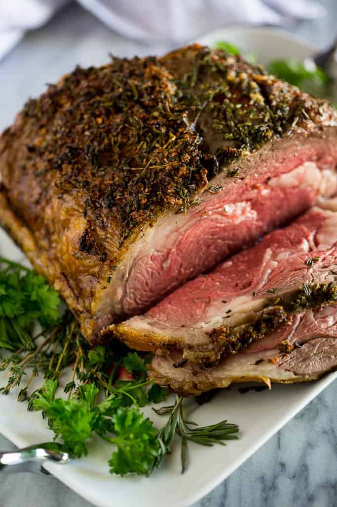

Prime Rib

Prime rib is a classic roast beef preparation made from the beef rib primal cut, usually roasted
with the bone in and served with a simple pan sauce made from its natural juices
(au jus). ... If the meat is not labeled as "prime" then it is simply a standing
rib roast, or, if it is boneless, it is a rib-eye roast
- 1 (10 pound) standing rib roast
- Salt
- Freshly ground black pepper
- 1/4 cup fat and drippings from the pan
- 1/4 cup all-purpose flour
- 3 to 4 cups water, milk, stock, or beer
- Remove the beef roast from the refrigerator 3 hours before you start to cook it.
Sprinkle it with salt all over and let it sit, loosely wrapped in butcher paper.
Roasts should be brought close to room temperature before they go into the oven
to ensure more even cooking.
- If your butcher hasn't already done so, cut the bones away from the roast and
tie them back on to the roast with kitchen string.